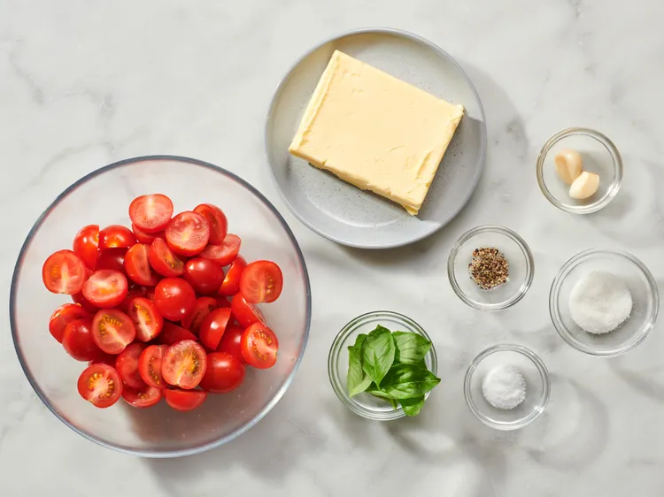

Description
This tomato butter can be used in many different ways. Slather it on some crusty bread or add it to your pasta dishes.
Ingredients
- 1 pound cherry tomatoes, halved
- 1 cup butter, softened
- 2 cloves garlic
- 1/2 tablespoon sugar
- 1/2 tablespoon salt, or more to taste
- 1/4 teaspoon black pepper, or more to taste
- 1 tablespoon fresh basil, or more to taste
Directions
Step 1
Gather all ingredients. Set an oven rack about 6 inches from the heat source and preheat the oven's broiler. Line a baking sheet with parchment paper.
Step 2
Set cherry tomatoes on the prepared backing sheet, cut side up and broil until they start to char and become soft, 5 to 8 minutes.
Step 3
Combine tomatoes, butter, garlic, sugar, salt and pepper in a food processor and process until smooth. Let cool.
Step 4
Once cooled, add basil leaves and process again.